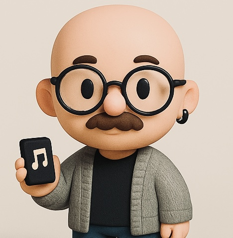

Ricercatore, musicologo & altre cose. Studio come e se le logiche delle piattaforme digitali trasformano la vita musicale quotidiana.

Scene indipendente. Progetti, release, live ed eventi.
Quelli che tento di fare io, quelli che ascolto e mi piacciono.
Tuttimieistupidintenti. Aggiornamenti su ricerca e progetti. Non esattamente sempre aggiornata :).